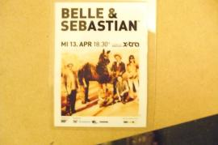

Retro Active Schwervon!/B&S Tour Diary DAY 2 & 3
picture:

Retro Active B&S Tour Diary continues Day 2: 4/13/11 (Zurich, Switzerland)
I woke up feeling pretty refreshed. Caro had to go to work but she made me a delicious breakfast of oatmeal and fruit. She showed me how to take the tram into the center of town. I found the venue which was part of a hotel called Xtra. I met this really nice guy named Sam who was the production manager there. I would find later that Sam was friends with Ursina, another friend from Switzerland we met through Caro (small world). Anyway Sam said that they had arranged for 2 more hotel rooms than the Belle's needed and that we could sleep in them tonight if we wanted to. This was really great because Klaus was joining us tonight and all three of us were going to have to squeeze into one room at Caro's place. Looks like things are looking up.
I had about 4 hours to kill until Nan's train got in so I decided to go for a walk around Zurich. There is a beautiful river that runs through the center of town so I walked along it. It lead to a big lake appropriately called Lake Zurich. I saw this big wooden mushroom next to the river.

There is also this little island with a nice park on it in the middle of the river. I remember seeing a documentary about this park once. About 10 years ago they used to allow people to do heroin there and it was full of junkies and people selling and using. The logic was that people would just come here to do their drugs and not bother people in the city. I gues it didn't really work out so they decided to clean it up and now it appears to be a very nice park.

I kept seeing these signs around town and I couldn't help but think they were selling rabbit hot dogs but "rabbatt" means "discount" in German.

After my walk I picked up Nan at the train station and walked back to the venue. We ran into Bob (bass player for Vaselines and member of Belle and Sebastian) in the hallway of the hotel. It was nice to see him. He introduced us to the rest of the band and crew. There were so many people running around it was hard to tell who was doing what. The backstage had a nice spread. We had some good carrot soup and coffee. Klaus came and we loaded in. There we some kind of problem with the PA for half of our sound check so we didn't really have much time. Our first show was a little shaky and we had to go on quite early but there was still a very nice crowd. Watching the Belle's show was really impressive. As well as 8 people in the band, they performed with a local string trio every night. They also had their own light show and sound crew. It was an incredible display of choreography between the band and crew every night. Not to mention the songs and how they managed to maintain this intimacy in a massive venue. The first show in Zurich was for something like 1,800 people and this would be the smallest crowd of the tour. It was slightly overwhelming for us. We also got to know Fiona the merch girl who we would learn was dating Beans the keyboard player. Whew!
The show ended early due to a goth dance party going on in the venue later that night. Bob, Richard (the drummer) and Stevie (tour manager) and I all decided to check out the party. This started what was to become somewhat of a nightly ritual of dance party and Jagermeister shots. Actually, that night we didn't do much dancing but we enjoyed watching the Goth's and reminiscing about our youthful past indulgences into the scene. After a couple more beers and some random drunken (me drunken, not sure if they were) bonding with various member of cast and crew they hit the road. As with most larger touring acts they drove at night and slept on the bus. I would learn that there were 28 in total including everyone on the crew. Before turning in I had a nice talk with Sam, the venue production manager. He told me R. Kelly was going to play at this Xtra next week and they had only 300 pre-sales. We talked a bit about politics. And he told me more fun stories about some of the crazy bands that had played there. That guy has seen some crazy stuff.
It was going to be a trick to try and get to know everyone's name. We spoke with Stuart (the lead singer) briefly about having met once before at a random unplugged house show in Glasgow that we played at. He remembered us. I also bonded slightly with Sarah (singer, fiddle, keys) over our pets. She's got a pretty scrappy puppy and well you all know about Gummo. Some of the Belle's stage hands and sound crew, Glen and Ben, were nice about helping to iron out our sound check problems. At this point I felt totally welcomed with open arms. It was such a nice relief. I could tell this was going to be good.
Retro Active Schwervon/B&S Tour Diary continues Day 3: 4/14/11 (Milan, Italy)We woke up well rested and got off to an early start for Milan. We'd never been to Italy before and were excited to check it out. We got to the venue with plenty of time to spare. As we entered the front door I nearly had to pick myself up off the floor as we came upon this: News from the top was that there had already been 2,000 pre sales for the evening's show. Woh! Luckily we had some time to get acclimated to the space. This was by far the largest place we had ever played. I haven't even seen that many concerts in a place this big. The whole B&S team worked like the pros that they are. We had lasagna and gnocchi potatoes for lunch and after a little conversation with Stewart we discovered that Klaus actually knows the girl that was on their "Dear Catastrophe Waitress" album cover. Turns out she is from Regensburg, which is also Klaus' home town. All sorts of weird coincidences were happening like that. It turns out that Nigel, the horn player for B&S, also used to play trumpet for Camera Obscura who we met a couple of years back when they came to NYC with our friend Francis. Another member of the band was Dave, who we had seen play with Teenage Fan club. So it looks like the Glasgow music scene is quite incestuous. But I guess that's how most music scenes are. Needless to day we were a bit nervous about playing in front of all those people.
News from the top was that there had already been 2,000 pre sales for the evening's show. Woh! Luckily we had some time to get acclimated to the space. This was by far the largest place we had ever played. I haven't even seen that many concerts in a place this big. The whole B&S team worked like the pros that they are. We had lasagna and gnocchi potatoes for lunch and after a little conversation with Stewart we discovered that Klaus actually knows the girl that was on their "Dear Catastrophe Waitress" album cover. Turns out she is from Regensburg, which is also Klaus' home town. All sorts of weird coincidences were happening like that. It turns out that Nigel, the horn player for B&S, also used to play trumpet for Camera Obscura who we met a couple of years back when they came to NYC with our friend Francis. Another member of the band was Dave, who we had seen play with Teenage Fan club. So it looks like the Glasgow music scene is quite incestuous. But I guess that's how most music scenes are. Needless to day we were a bit nervous about playing in front of all those people. This night some guys from the Belle's sound crew did sound for us and we felt much more comfortable than the night before. They were so nice and professional. And a couple of Jack and Cokes didn't hurt.
This night some guys from the Belle's sound crew did sound for us and we felt much more comfortable than the night before. They were so nice and professional. And a couple of Jack and Cokes didn't hurt. The show felt good. The Belle's show was truly breath taking. We got up front for most of it but from the back you could really see how the whole thing works. They had an amazing light show and the sound was incredible. I was totally blown away at how casual and friendly Stuart managed to be in such a huge place. It's a real art to capture all the dynamics and intimacy of those songs to a crowd of 2,500. I was also impressed at how varied the two shows were with content. The vibe was so positive I felt like I was on ecstasy or something. These snaps don't do it justice.
The show felt good. The Belle's show was truly breath taking. We got up front for most of it but from the back you could really see how the whole thing works. They had an amazing light show and the sound was incredible. I was totally blown away at how casual and friendly Stuart managed to be in such a huge place. It's a real art to capture all the dynamics and intimacy of those songs to a crowd of 2,500. I was also impressed at how varied the two shows were with content. The vibe was so positive I felt like I was on ecstasy or something. These snaps don't do it justice. 
 I think everyone was feeling pretty buzzy after the show so Bob cranked up the tunes and we had a spontaneous dance party back stage. You never would have guessed that a band that made such sweet music could party so hard. The Jeagermeister flowed and we cut a rug to Bill Wyman's "Je Suis Un Rock Star" (which sort of became an unofficial "tongue in cheek" theme for the tour). It was in heavy rotation for the remainder of our post show dance parties. It's got to be the most ridiculous song I've ever heard but it was great to dance to. Such is the case with most good dance tunes I guess. The Belle's hit their bus call and we went in search of our mooched hotel room. We ran into a bit of a snag with the hotel. We weren't quite sneaky enough getting in and they wanted an extra 600 euros for all three of us to stay in the room so we decided to search around a cheaper part of town for a hotel. After driving around for an hour we found nothing available but some Italian hookers. We were told at one of the hotels that there was some kind of convention in Milan and that we should cross over into Switzerland for something. By about 4:30 in the morning we finally found a place that we could afford. We had about 6 hours to crash before we had to be on the road to Munich. I probably could have done without that last beer if I knew this was going to happen. Oh well...that's rock n roll. I found some random dude's flicker pics of us from the show:www.flickr.com/photos/rodolfo-sassano/sets/72157626379598917/with/5622399386/
I think everyone was feeling pretty buzzy after the show so Bob cranked up the tunes and we had a spontaneous dance party back stage. You never would have guessed that a band that made such sweet music could party so hard. The Jeagermeister flowed and we cut a rug to Bill Wyman's "Je Suis Un Rock Star" (which sort of became an unofficial "tongue in cheek" theme for the tour). It was in heavy rotation for the remainder of our post show dance parties. It's got to be the most ridiculous song I've ever heard but it was great to dance to. Such is the case with most good dance tunes I guess. The Belle's hit their bus call and we went in search of our mooched hotel room. We ran into a bit of a snag with the hotel. We weren't quite sneaky enough getting in and they wanted an extra 600 euros for all three of us to stay in the room so we decided to search around a cheaper part of town for a hotel. After driving around for an hour we found nothing available but some Italian hookers. We were told at one of the hotels that there was some kind of convention in Milan and that we should cross over into Switzerland for something. By about 4:30 in the morning we finally found a place that we could afford. We had about 6 hours to crash before we had to be on the road to Munich. I probably could have done without that last beer if I knew this was going to happen. Oh well...that's rock n roll. I found some random dude's flicker pics of us from the show:www.flickr.com/photos/rodolfo-sassano/sets/72157626379598917/with/5622399386/ Just another day at the office.
Just another day at the office.
This is an excerpt from my regular blog: Rock 'n Rollers Don't Bathe
- MMM's blog
- Login or register to post comments